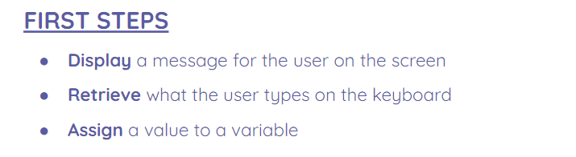
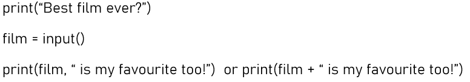

Page 3 of 16
Input information
INPUT AND OUTPUT INFORMATION


Activities
1Activity 1
Create a program that asks the user his name and age and prints them in the screen. Ex: "Hello Tom, you are 22 years old"
2Activity 2
Write a program that asks the user for a number and prints on the screen the previous and the next number. use the example (below) as a starting template and modify it.
EXAMPLE: READ AND PRINT NUMBERS